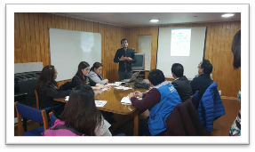
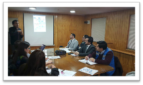
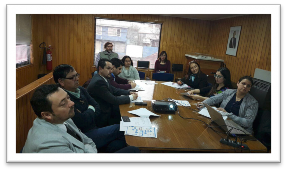

Acta de Reunión # 11
Imágenes de la reunión Fecha: 6, junio del 2017

Asunto: Taller de capacitación usuarios monitores y analistas - Remoto vía Skype
Participantes:
Cristian Cortés, Jefe Modernizacion
Lorits Hernández, E. Emergencia
Actores de Organismos Públicos y Empresas Prestadoras de Servicios

Anibal Contreras, Jefe Proyecto MCI
Objetivo de la reunión:
Sesión de transferencia tecnológica para los colaboradores de la Gobernación para conocer las acciones de los usuarios monitores y analistas en la plataforma CooperaNet.

Temas tratados:
Se creó un incidente de prueba revisando:
Notificaciones del sistema por los canales de correo electrónico y telegram
Creación automática de oficios
Cambio de estados del incidente
Cambio de categoría del incidente
Cambio del contenido de un incidente (moderación)
Cambio de la ubicación
Inicio de Sesión por primera vez y cambio de contraseña
Acuerdos: No Hubo.

www.MiCiudadInteligente.com | contacto@miciudadinteligente.com | +56968554901